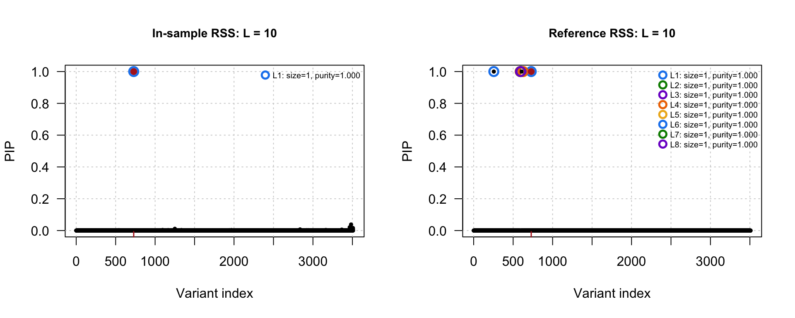
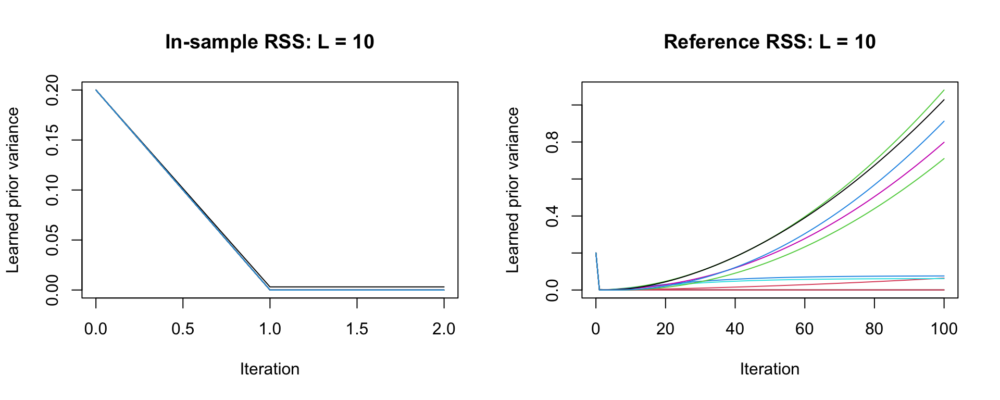
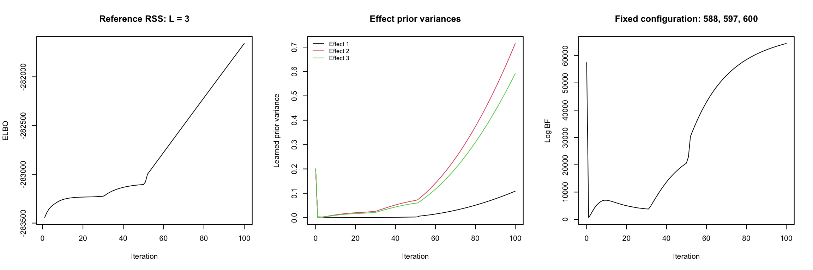
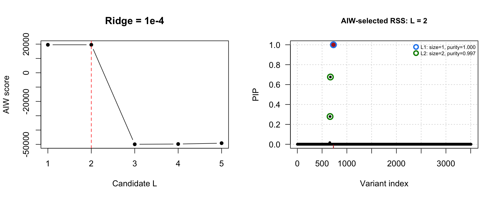
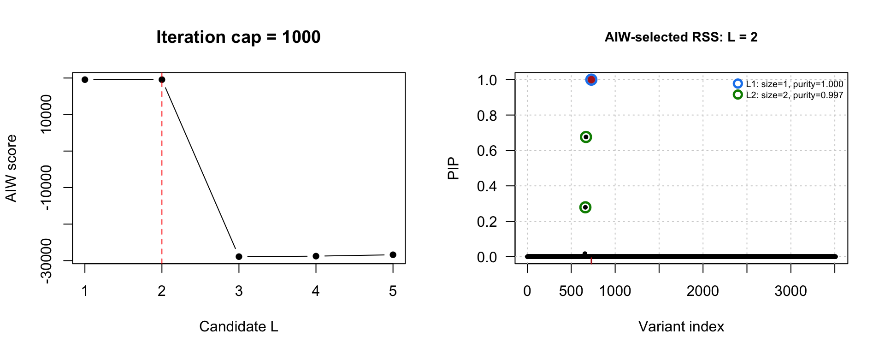

Last updated: 2026-10-27
Checks: 6 1
Knit directory: susieRobust-workflowr/
This reproducible R Markdown analysis was created with workflowr (version 1.7.2). The Checks tab describes the reproducibility checks that were applied when the results were created. The Past versions tab lists the development history.
The R Markdown file has unstaged changes. To know which version of
the R Markdown file created these results, you’ll want to first commit
it to the Git repo. If you’re still working on the analysis, you can
ignore this warning. When you’re finished, you can run
wflow_publish to commit the R Markdown file and build the
HTML.
Great job! The global environment was empty. Objects defined in the global environment can affect the analysis in your R Markdown file in unknown ways. For reproduciblity it’s best to always run the code in an empty environment.
The command set.seed(20261018) was run prior to running
the code in the R Markdown file. Setting a seed ensures that any results
that rely on randomness, e.g. subsampling or permutations, are
reproducible.
Great job! Recording the operating system, R version, and package versions is critical for reproducibility.
Nice! There were no cached chunks for this analysis, so you can be confident that you successfully produced the results during this run.
Great job! Using relative paths to the files within your workflowr project makes it easier to run your code on other machines.
Great! You are using Git for version control. Tracking code development and connecting the code version to the results is critical for reproducibility.
The results in this page were generated with repository version 465f3c9. See the Past versions tab to see a history of the changes made to the R Markdown and HTML files.
Note that you need to be careful to ensure that all relevant files for
the analysis have been committed to Git prior to generating the results
(you can use wflow_publish or
wflow_git_commit). workflowr only checks the R Markdown
file, but you know if there are other scripts or data files that it
depends on. Below is the status of the Git repository when the results
were generated:
Ignored files:
Ignored: .DS_Store
Ignored: .Rhistory
Ignored: .Rproj.user/
Ignored: analysis/.DS_Store
Ignored: analysis/.RData
Ignored: analysis/.Rhistory
Unstaged changes:
Modified: analysis/01-get-started.Rmd
Modified: analysis/03-problematic-simulation.Rmd
Modified: analysis/index.Rmd
Note that any generated files, e.g. HTML, png, CSS, etc., are not included in this status report because it is ok for generated content to have uncommitted changes.
These are the previous versions of the repository in which changes were
made to the R Markdown
(analysis/03-problematic-simulation.Rmd) and HTML
(docs/03-problematic-simulation.html) files. If you’ve
configured a remote Git repository (see ?wflow_git_remote),
click on the hyperlinks in the table below to view the files as they
were in that past version.
| File | Version | Author | Date | Message |
|---|---|---|---|---|
| Rmd | 465f3c9 | dodat-stats | 2026-10-27 | Add problematic simulation example and AIW iteration-cap comparison |
| html | 465f3c9 | dodat-stats | 2026-10-27 | Add problematic simulation example and AIW iteration-cap comparison |
This is a saved example from the RCC v5 pilot: a 2 Mb locus with 3,508 variants, 200,000 study individuals, and 5,000 reference individuals. The populations split 200 generations ago. There is one causal variant (SNP 729), and regional heritability is 0.3%. Recombination is \(10^{-8}\) per base per generation. We load the original LD matrices and association statistics without resimulating. All SNP indices below use R’s one-based indexing.
library(susieRobust)
library(susieR)
# The prior-variance plot uses the trace$effect format in susieR 0.16.6.
example <- readRDS("data/problematic-simulation/example.rds")
R <- readRDS("data/problematic-simulation/R.rds")
R0 <- readRDS("data/problematic-simulation/R0.rds")
v <- example$v
N <- example$N; causal <- example$causal; J <- length(v)
L_max <- 10L; max_iter <- 100L; tol <- 1e-4
coverage <- 0.95; min_abs_corr <- 0.5SNPs 588, 597, and 600 are linearly dependent in the reference panel. Their \(3\times3\) reference LD matrix has a zero eigenvalue, even though no pair is perfectly correlated. If \(a\) is its unit null eigenvector, then \(R_{0,\gamma}a=0\), but \(a^\top v_\gamma\ne0\): the association statistics do not respect the reference panel’s linear dependence. The corresponding in-sample LD block does not have this exact dependence.
gamma <- c(588L, 597L, 600L)
round(R0[gamma, gamma], 4) [,1] [,2] [,3]
[1,] 1.0000 0.4153 -0.0302
[2,] 0.4153 1.0000 0.8967
[3,] -0.0302 0.8967 1.0000e <- eigen(R0[gamma, gamma], symmetric=TRUE)
a <- e$vectors[, which.min(e$values)]
if (a[2] < 0) a <- -a # Fix the arbitrary eigenvector sign.
data.frame(SNP=gamma, null_direction=a, v=v[gamma]) SNP null_direction v
1 588 -0.3112011 -0.039170211
2 597 0.7028437 -0.028368323
3 600 -0.6396597 0.001111234data.frame(
reference_min_eigenvalue=min(e$values),
in_sample_min_eigenvalue=min(eigen(R[gamma, gamma], symmetric=TRUE)$values),
reference_null_residual=sqrt(sum((R0[, gamma] %*% a)^2)),
association_null_contrast=sum(a * v[gamma])
) reference_min_eigenvalue in_sample_min_eigenvalue reference_null_residual
1 2.442491e-15 0.006242688 4.27246e-15
association_null_contrast
1 -0.008459496Along this direction, the RSS likelihood can favor large opposing effects. A small ridge makes the matrix invertible, but leaves a weakly penalized direction and can lead to slow updates. Here we use the same ridge, \(10^{-4}\), for both in-sample and reference RSS, learn the effect prior variances, and keep the residual variance fixed at 1.
Let \(\gamma=(j_1,\ldots,j_L)\) specify distinct causal SNPs, and write \(C=(1-\epsilon)R_0+\epsilon I\), \(C_\gamma=C[\gamma,\gamma]\), and \(v_\gamma=v[\gamma]\). Conditional on this configuration, use the Gaussian effect prior \(\beta_\gamma\sim N(0,D)\), where \(D=\operatorname{diag}(V_1,\ldots,V_L)\) is held fixed when integrating. With residual variance 1, the RSS likelihood ratio against the null is \[ \frac{\mathcal L(\beta_\gamma)}{\mathcal L(0)} =\exp\left\{N v_\gamma^\top\beta_\gamma -\frac{N}{2}\beta_\gamma^\top C_\gamma\beta_\gamma\right\}. \] Integrating over the effects gives the exact configuration-specific log BF: \[ \boxed{ \log\mathrm{BF}_\gamma =-\frac12\log\det(I+N D^{1/2}C_\gamma D^{1/2}) +\frac{N^2}{2}v_\gamma^\top (D^{-1}+N C_\gamma)^{-1}v_\gamma . } \] This expression assumes positive \(V_l\); the code below also handles zero variances by using \(D^{1/2}(I+N D^{1/2}C_\gamma D^{1/2})^{-1}D^{1/2}\). It does not include prior odds on \(\gamma\) and is not the variational ELBO or the AIW score.
For a common prior variance \(V_l=\tau^2\), let \(C_\gamma u_k=d_k u_k\) with orthonormal \(u_k\). Then \[ \log\mathrm{BF}_\gamma =\frac12\sum_k\left[ \frac{N^2\tau^2(u_k^\top v_\gamma)^2}{1+N\tau^2d_k} -\log(1+N\tau^2d_k)\right]. \] A small eigenvalue \(d_k\) together with a nonzero association contrast \(u_k^\top v_\gamma\) can therefore produce a very large BF. Here the reference null direction becomes an eigenvector with eigenvalue \(d_k=\epsilon=10^{-4}\) after adding the ridge.
log_bf <- function(gamma, V, C, v, N) {
D_half <- diag(sqrt(V), nrow=length(gamma))
B <- diag(length(gamma)) + N * D_half %*% C[gamma, gamma] %*% D_half
b <- D_half %*% v[gamma]
-0.5 * as.numeric(determinant(B, logarithm=TRUE)$modulus) +
0.5 * N^2 * drop(crossprod(b, solve(B, b)))
}
C <- (1-1e-4)*R0 + 1e-4*diag(J)
log_bf(gamma, V=rep(0.2, 3), C=C, v=v, N=N)[1] 57416.55ridge <- 1e-4
fit_in_sample <- susieR::susie_ss(
XtX=N * ((1-ridge)*R + ridge*diag(J)), Xty=N*v, yty=N, n=N,
L=L_max, standardize=FALSE, residual_variance=1,
estimate_residual_variance=FALSE, estimate_prior_variance=TRUE,
scaled_prior_variance=0.2, check_prior=FALSE,
max_iter=max_iter, tol=tol, coverage=coverage,
min_abs_corr=min_abs_corr, n_purity=J, track_fit=TRUE)
fit_reference <- susieR::susie_ss(
XtX=N * ((1-ridge)*R0 + ridge*diag(J)), Xty=N*v, yty=N, n=N,
L=L_max, standardize=FALSE, residual_variance=1,
estimate_residual_variance=FALSE, estimate_prior_variance=TRUE,
scaled_prior_variance=0.2, check_prior=FALSE,
max_iter=max_iter, tol=tol, coverage=coverage,
min_abs_corr=min_abs_corr, n_purity=J, track_fit=TRUE)WARNING: IBSS algorithm did not converge in 100 iterations!Warning: IBSS algorithm did not converge in 100 iterations!data.frame(
LD=c("In-sample", "Reference"),
iterations=c(fit_in_sample$niter, fit_reference$niter),
converged=c(fit_in_sample$converged, fit_reference$converged),
causal_PIP=c(fit_in_sample$pip[causal], fit_reference$pip[causal])
) LD iterations converged causal_PIP
1 In-sample 2 TRUE 1.0000000
2 Reference 100 FALSE 0.9999999The causal SNP is marked in red in the PIP plots.
par(mfrow=c(1,2))
plot_pip(fit_in_sample, causal=causal, R=R, main="In-sample RSS: L = 10")
plot_pip(fit_reference, causal=causal, R=R0, main="Reference RSS: L = 10")
| Version | Author | Date |
|---|---|---|
| 465f3c9 | dodat-stats | 2026-10-27 |
par(mfrow=c(1,1))Each curve below is the learned prior variance of one single-effect component. Iteration 0 is the initialization. The in-sample trace ends when its fit stops.
par(mfrow=c(1,2))
for (name in c("In-sample", "Reference")) {
fit <- if (name == "In-sample") fit_in_sample else fit_reference
history <- fit$trace$effect
V <- with(history, tapply(V, list(iteration, effect), identity))
matplot(as.numeric(rownames(V)), V, type="l", lty=1,
xlab="Iteration", ylab="Learned prior variance",
main=paste(name, "RSS: L = 10"))
}
| Version | Author | Date |
|---|---|---|
| 465f3c9 | dodat-stats | 2026-10-27 |
par(mfrow=c(1,1))Use ridge \(10^{-4}\) and the same 100-iteration cap, now with three single-effect components. The trace records their learned prior variances and highest-probability SNPs after each iteration.
fit_L3 <- susieR::susie_ss(
XtX=N*C, Xty=N*v, yty=N, n=N, L=3,
standardize=FALSE, residual_variance=1,
estimate_residual_variance=FALSE, estimate_prior_variance=TRUE,
scaled_prior_variance=0.2, check_prior=FALSE,
max_iter=100, tol=1e-4, coverage=coverage,
min_abs_corr=min_abs_corr, n_purity=J, track_fit=TRUE)WARNING: IBSS algorithm did not converge in 100 iterations!Warning: IBSS algorithm did not converge in 100 iterations!history_L3 <- fit_L3$trace$effect
V_L3 <- with(history_L3, tapply(V, list(iteration, effect), identity))
iterations_L3 <- as.numeric(rownames(V_L3))
bf_L3 <- apply(V_L3, 1, function(V)
log_bf(gamma, V=V, C=C, v=v, N=N))For the BF curve, hold \(\gamma=(588,597,600)\) fixed and insert the learned variances at each iteration, assigning component \(l\) to SNP \(\gamma_l\). Each value is an exact Gaussian integral conditional on those variances; this diagnostic curve is not the evidence averaged over SuSiE configurations.
par(mfrow=c(1,3))
plot(seq_along(fit_L3$elbo), fit_L3$elbo, type="l",
xlab="Iteration", ylab="ELBO", main="Reference RSS: L = 3")
matplot(iterations_L3, V_L3, type="l", lty=1, col=1:3,
xlab="Iteration", ylab="Learned prior variance", main="Effect prior variances")
legend("topleft", legend=paste("Effect", 1:3), col=1:3, lty=1, bty="n", cex=.8)
plot(iterations_L3, bf_L3, type="l",
xlab="Iteration", ylab="Log BF", main="Fixed configuration: 588, 597, 600")
par(mfrow=c(1,1))The snapshots show the fit moving away from the true SNP 729 and onto the linearly dependent reference configuration. The prior variances then grow, and the ELBO is still increasing at the iteration cap.
top_SNP <- with(history_L3, tapply(top_variable, list(iteration, effect), identity))
top_alpha <- with(history_L3, tapply(top_alpha, list(iteration, effect), identity))
snapshots <- c(1, 5, 10, 25, 50, 75, 100)
rows <- match(snapshots, iterations_L3)
data.frame(iteration=snapshots,
SNP_1=top_SNP[rows, 1], SNP_2=top_SNP[rows, 2], SNP_3=top_SNP[rows, 3],
alpha_1=top_alpha[rows, 1], alpha_2=top_alpha[rows, 2], alpha_3=top_alpha[rows, 3]) iteration SNP_1 SNP_2 SNP_3 alpha_1 alpha_2 alpha_3
1 1 729 668 600 1.0000000 0.6569835 0.9999976
5 5 729 668 600 1.0000000 0.6318300 1.0000000
10 10 729 627 600 1.0000000 0.5773257 1.0000000
25 25 729 627 600 0.7007519 0.8497901 1.0000000
50 50 588 627 600 0.6249602 0.8194393 1.0000000
75 75 588 597 600 0.9819158 1.0000000 1.0000000
100 100 588 597 600 0.9991127 1.0000000 1.0000000data.frame(iterations=fit_L3$niter, converged=fit_L3$converged,
last_ELBO_increase=tail(diff(fit_L3$elbo), 1), causal_PIP=fit_L3$pip[causal]) iterations converged last_ELBO_increase causal_PIP
1 100 FALSE 27.74708 0Now restrict AIW to \(L=1,\ldots,5\), keeping the same 100-iteration cap and RSS convergence tolerance. All candidate fits start from fresh initialization.
set.seed(example$seed)
time_aiw <- system.time(fit_aiw <- susie_aiw(
v=v, R0=R0, N=N, L=1:5, max_iter=100, tol=1e-4,
rss_ridge=1e-4, estimate_prior_variance=TRUE,
lambda_max = .1,
keep_fits=TRUE))["elapsed"]WARNING: IBSS algorithm did not converge in 100 iterations!Warning: IBSS algorithm did not converge in 100 iterations!Warning: SuSiE-RSS did not converge for L = 3 within max_iter = 100; AIW will
score and retain its final iterate. Inspect candidate diagnostics.WARNING: IBSS algorithm did not converge in 100 iterations!Warning: IBSS algorithm did not converge in 100 iterations!Warning: SuSiE-RSS did not converge for L = 4 within max_iter = 100; AIW will
score and retain its final iterate. Inspect candidate diagnostics.WARNING: IBSS algorithm did not converge in 100 iterations!Warning: IBSS algorithm did not converge in 100 iterations!Warning: SuSiE-RSS did not converge for L = 5 within max_iter = 100; AIW will
score and retain its final iterate. Inspect candidate diagnostics.fit_aiw$scores[, c("L", "objective", "rss_iterations", "rss_converged",
"rss_last_elbo_change", "selected")] L objective rss_iterations rss_converged rss_last_elbo_change selected
1 1 19551.04 2 TRUE 0.000000e+00 FALSE
2 2 19553.36 4 TRUE 3.338244e-05 TRUE
3 3 -49934.43 100 FALSE 2.774708e+01 FALSE
4 4 -49762.22 100 FALSE 2.759806e+01 FALSE
5 5 -49158.50 100 FALSE 2.745763e+01 FALSEpar(mfrow=c(1,2))
plot(fit_aiw$scores$L, fit_aiw$scores$objective, type="b", pch=16,
xlab="Candidate L", ylab="AIW score", main="Ridge = 1e-4")
abline(v=fit_aiw$selected_L, col="red", lty=2)
plot_pip(fit_aiw, causal=causal, R=R0,
main=paste("AIW-selected RSS: L =", fit_aiw$selected_L))
| Version | Author | Date |
|---|---|---|
| 465f3c9 | dodat-stats | 2026-10-27 |
par(mfrow=c(1,1))The convergence problem is still present among the candidate RSS fits, but AIW selects \(L=2\), whose RSS fit did converge. Convergence does not guarantee perfect fine-mapping: inspect the selected credible sets below, including whether they contain the true causal SNP.
data.frame(CS=names(fit_aiw$sets$cs), size=lengths(fit_aiw$sets$cs),
contains_causal=sapply(fit_aiw$sets$cs, function(s) any(causal %in% s))) CS size contains_causal
L1 L1 1 TRUE
L2 L2 2 FALSEIncrease only the iteration cap from 100 to 1,000. Keep \(L=1,\ldots,5\),
rss_ridge = 1e-4, and all other settings the same as in
section 2.
set.seed(example$seed)
time_aiw_1000 <- system.time(fit_aiw_1000 <- susie_aiw(
v=v, R0=R0, N=N, L=1:5, max_iter=1000, tol=1e-4,
rss_ridge=1e-4, estimate_prior_variance=TRUE,
lambda_max = .1,
keep_fits=TRUE))["elapsed"]WARNING: IBSS algorithm did not converge in 1000 iterations!Warning: IBSS algorithm did not converge in 1000 iterations!Warning: SuSiE-RSS did not converge for L = 3 within max_iter = 1000; AIW will
score and retain its final iterate. Inspect candidate diagnostics.WARNING: IBSS algorithm did not converge in 1000 iterations!Warning: IBSS algorithm did not converge in 1000 iterations!Warning: SuSiE-RSS did not converge for L = 4 within max_iter = 1000; AIW will
score and retain its final iterate. Inspect candidate diagnostics.WARNING: IBSS algorithm did not converge in 1000 iterations!Warning: IBSS algorithm did not converge in 1000 iterations!Warning: SuSiE-RSS did not converge for L = 5 within max_iter = 1000; AIW will
score and retain its final iterate. Inspect candidate diagnostics.fit_aiw_1000$scores[, c("L", "objective", "rss_iterations", "rss_converged",
"rss_last_elbo_change", "selected")] L objective rss_iterations rss_converged rss_last_elbo_change selected
1 1 19551.04 2 TRUE 0.000000e+00 FALSE
2 2 19553.36 4 TRUE 3.338244e-05 TRUE
3 3 -28914.84 1000 FALSE 1.941596e+01 FALSE
4 4 -28776.09 1000 FALSE 1.938474e+01 FALSE
5 5 -28401.55 1000 FALSE 1.917327e+01 FALSEpar(mfrow=c(1,2))
plot(fit_aiw_1000$scores$L, fit_aiw_1000$scores$objective,
type="b", pch=16, xlab="Candidate L", ylab="AIW score", main="Iteration cap = 1000")
abline(v=fit_aiw_1000$selected_L, col="red", lty=2)
plot_pip(fit_aiw_1000, causal=causal, R=R0,
main=paste("AIW-selected RSS: L =", fit_aiw_1000$selected_L))
| Version | Author | Date |
|---|---|---|
| 465f3c9 | dodat-stats | 2026-10-27 |
par(mfrow=c(1,1))selected_100 <- subset(fit_aiw$scores, selected)
selected_1000 <- subset(fit_aiw_1000$scores, selected)
data.frame(
iteration_cap=c(100, 1000),
elapsed_seconds=c(unname(time_aiw), unname(time_aiw_1000)),
selected_L=c(fit_aiw$selected_L, fit_aiw_1000$selected_L),
selected_RSS_iterations=c(selected_100$rss_iterations, selected_1000$rss_iterations),
selected_RSS_converged=c(selected_100$rss_converged, selected_1000$rss_converged)
) iteration_cap elapsed_seconds selected_L selected_RSS_iterations
1 100 52.577 2 4
2 1000 248.794 2 4
selected_RSS_converged
1 TRUE
2 TRUEdata.frame(
max_PIP_difference=max(abs(fit_aiw$pip - fit_aiw_1000$pip)),
identical_credible_sets=identical(fit_aiw$sets$cs, fit_aiw_1000$sets$cs)
) max_PIP_difference identical_credible_sets
1 0 TRUEThe RSS fit at the AIW-selected \(L=2\) converges in only 4 iterations, well below either cap. Increasing the cap makes the overall algorithm slower because the larger, nonconverged candidates continue running. It does not change the selected \(L\), PIPs, or credible sets in this example. The scores of the nonselected candidates do change as their RSS fits continue to update.
sessionInfo()R version 4.6.1 (2026-06-24)
Platform: aarch64-apple-darwin23
Running under: macOS Golden Gate 27.0.1
Matrix products: default
BLAS: /Library/Frameworks/R.framework/Versions/4.6/Resources/lib/libRblas.0.dylib
LAPACK: /Library/Frameworks/R.framework/Versions/4.6/Resources/lib/libRlapack.dylib; LAPACK version 3.12.1
locale:
[1] C.UTF-8/C.UTF-8/C.UTF-8/C/C.UTF-8/C.UTF-8
time zone: America/New_York
tzcode source: internal
attached base packages:
[1] stats graphics grDevices utils datasets methods base
other attached packages:
[1] susieR_0.16.6 susieRobust_0.0.0.9001 workflowr_1.7.2
loaded via a namespace (and not attached):
[1] generics_0.1.4 sass_0.4.10 stringi_1.8.9 lattice_0.22-9
[5] digest_0.6.39 magrittr_2.0.5 evaluate_1.0.5 grid_4.6.1
[9] RColorBrewer_1.1-3 fastmap_1.2.0 plyr_1.8.9 rprojroot_2.1.1
[13] jsonlite_2.0.0 Matrix_1.7-5 processx_3.9.0 whisker_0.4.1
[17] reshape_0.8.10 mixsqp_0.3-54 promises_1.5.0 httr_1.4.9
[21] scales_1.4.0 jquerylib_0.1.4 cli_3.6.6 rlang_1.3.0
[25] zigg_0.0.2 crayon_1.5.3 cachem_1.1.0 yaml_2.3.12
[29] otel_0.2.0 tools_4.6.1 dplyr_1.2.1 ggplot2_4.0.3
[33] httpuv_1.6.17 Rfast_2.1.5.2 vctrs_0.7.3 R6_2.6.1
[37] matrixStats_1.5.0 lifecycle_1.0.5 git2r_0.36.2 stringr_1.6.0
[41] fs_2.1.0 irlba_2.3.7 pkgconfig_2.0.3 callr_3.8.0
[45] RcppParallel_6.2.1 pillar_1.11.1 bslib_0.12.0 later_1.4.8
[49] gtable_0.3.6 glue_1.8.1 Rcpp_1.1.2 tidyselect_1.2.1
[53] xfun_0.60 tibble_3.3.1 rstudioapi_0.19.0 knitr_1.51
[57] farver_2.1.2 htmltools_0.5.9 rmarkdown_2.32 compiler_4.6.1
[61] getPass_0.2-4 S7_0.2.2